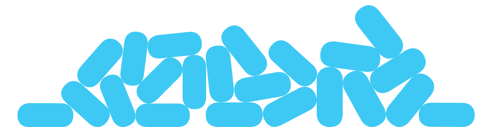
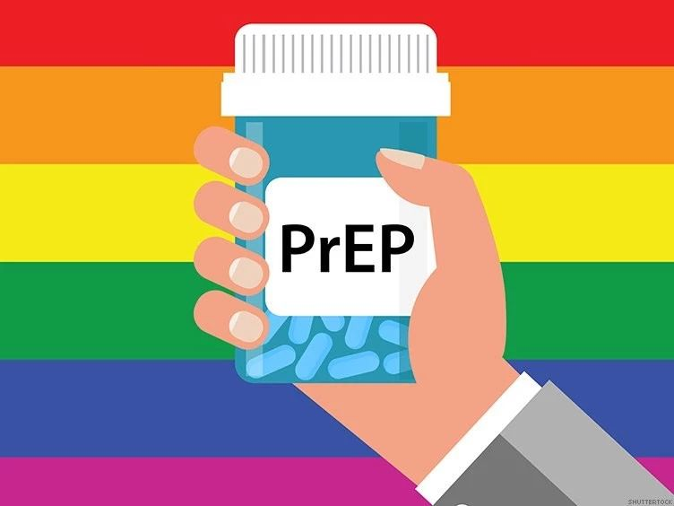
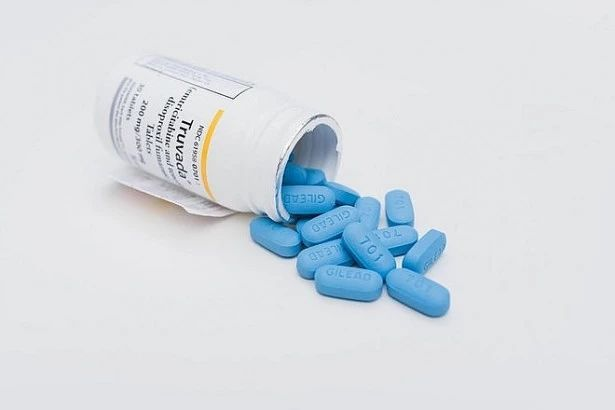

PrEP | HIV 还能这么防
疾病的历史，其实就是人类的历史，疾病所带来的各种隐喻与文化，也被深深刻进现今人类社会与文化发展的基因里。自1981年人类第一次发现艾滋病病毒感染者以来，已经过去了38年，在这短短的历史中，围绕着这一疾病所发生的诸多故事，早已在历史长河中掀起了巨大的风浪，起初作为“绝症”的它，目前已然变成一种可防可控可治的慢性疾病，而 PrEP 作为这一阶段的重要防治手段，受到世界各国的热切关注。
瓜瓜挑灯夜读，为大家整理了一些关于 PrEP 的满满干货。

什么是PrEP？
PrEP（Pre-exposure prophylaxis ），中文译名为“暴露前预防”，是指在接触病原体之前用药预防疾病的措施，特指在接触病原体之前服用抗病毒药物预防艾滋病毒/艾滋病的手段，能有效降低高危人群感染艾滋病毒的风险。即便大家对于“暴露前”这个词没有什么概念，“预防”二字的出现就将它最重要的信息赫然展现在大家面前。作为一种 HIV防治手段，PrEP 的出现使得人类通过药物达成对 HIV 的预防这一看似很未来的事情拉进了我们生活的现实。
PrEP为什么可以保护我？
作为一种RNA病毒，HIV 病毒潜入人体后，通过一种叫做“逆转录”的过程将该病毒内部的遗传物质转化为 DNA，再整合进人体细胞的 DNA 中，就能不断获得表达和复制，从而形成感染；而 PrEP 药物的存在和服用，会导致人体内血药浓度上升，HIV 病毒在体内碰到这样的药物环境，就无法完成“逆转录”过程，因此也就无法感染人体。
显然，服用PrEP药物的目的，正是通过在病毒侵入人体之前之抢先构造好一个“恶劣环境”，使得病毒无法完成自我复制，达到把病毒感染“拒之门外”的效果。这样一个作用的先后顺序非常重要，才使得PrEP方案成为一个预防性质的抗感染方案。

PrEP的主流方案是什么？
目前PrEP方案的主要选择用药为 TDF/FTC（替诺福韦/恩曲他滨），中文药物通用名为恩曲他滨替诺福韦片，商品名为 Truvada（舒发泰），在全球44个批准暴露前用药的国家和地区中，绝大多数推荐每日服药的方式，即需要使用者每日在固定时间按照固定剂量服用。在与主治医生确认好使用者目前 HIV 感染状况为阴性，感染 STD（性传播疾病）状况为阴性，且其身体状况需要符合一些条件，才能够正常和健康的服药，方可开始 PrEP 方案的使用。
PrEP我能负担的起吗？
目前，TDF/FTC 在我国被批准作为一种 PEP（暴露后预防）药物的一种，俗称阻断药。在发生高危行为后的72小时内也可以通过PEP进行紧急阻断，降低暴露后感染风险。前面提到的舒发泰在国内就是 PEP 治疗的一种主流药物，市场价在2000元/30粒左右，并且并未纳入社会医疗保险。
PrEP综合价格较高，并不是所有人都有条件每日坚持服用。部分国家和地区的卫生部门认为也可以用“2-1-1”的方式按需服用。
“2-1-1”指性行为之前2-24小时内服两粒，性行为后24小时服一粒，48小时服一粒即可停药，一共服药4粒。相关研究表明，对于男男性行为而言，“2-1-1”的服药方法也可以有效地预防HIV感染。

HIV 携带者可以使用 PrEP 药物吗？
PrEP并不适用于携带者。对于携带者而言，接受医生建议的治疗方案至关重要。越来越多的研究表明 U = U （没有病毒载量=不具传染性）的有效性。只要积极接受抗病毒治疗，HIV携带者和非携带者的生活没有任何区别。
我可以在中国获得 PrEP 治疗吗？
截至目前，全球范围内有44个国家和地区批准 TDF/FTC 用作暴露前预防，目前全球有超过30万人正在接受 PrEP 治疗。中国艾滋病治疗指南（2018版）中首次提到暴露前预防用药（PrEP）。但遗憾的是，我国药监部门暂未批准 TDF/FTC 用作暴露前预防。TDF/FTC 药物在我国目前只能作为HIV感染者的治疗用药和暴露后预防用药，不过已知的是国内已经有几家试点医院开始对暴露前预防课题进行实验和研究，TDF/FTC 在中国大陆作为暴露前预防用药的日期，相信就在不久的将来。
最后，瓜瓜要提醒大家的是：PrEP 治疗前后和过程中都需要医疗支持，在没有经过检查和获得医疗处方的情况下，最好不要私自使用PrEP药物。从一个安全和经济的角度考量，目前性价比最高的预防HIV方式还是全程正确使用安全套。
因此，不管你有没有在进行暴露前预防，还是要记得定期检测、全程正确使用安全套哦！
部分资料和图片来源于GPP项目/网络